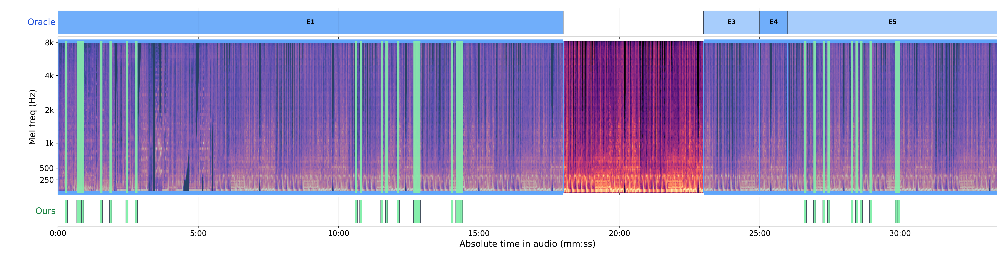
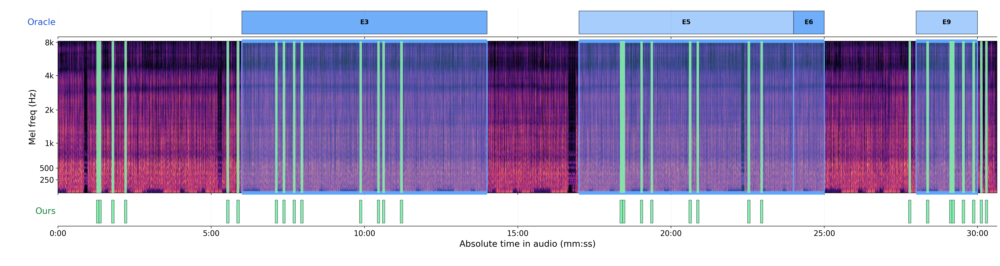
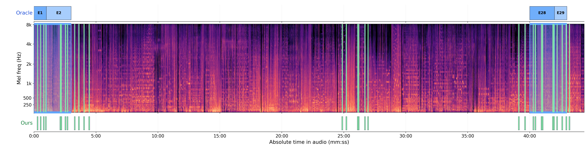

Large audio language models (LALMs) struggle with long-form audio understanding, as processing entire recordings makes it difficult to focus on query-relevant content distributed across distant segments while incurring substantial computational cost. We introduce AUDIOHELIX, a hierarchical DualGraph retrieval-augmented generation (RAG) framework. Unlike existing unimodal or non-graph RAG approaches, AUDIOHELIX constructs a multimodal DualGraph, that connects related textual and acoustic evidence across temporally distant segments for multi-hop reasoning. Extensive experiments on TraceAV-Bench, MMAU-Pro, and AudioMarathon demonstrate that AUDIOHELIX consistently outperforms full-audio with substantially lower inference-time computational cost.
Mel spectrogram of the full original audio. Blue bands are oracle events; green ticks are AudioHelix's retrieved 5 s units.
Play the audio or click the spectrogram to seek.

As the performance shifts from the large male dancer group to the solo unicyclist and then into the later mixed unicycle/dancer rope and pyramid segments, how does the background music behave across these transitions?

According to the narrator, how did Miuccia Prada’s early use of nylon eventually lead to the Linea Rossa/Prada Sport concept, and how was that line later positioned within Prada’s collections and strategy?

According to the narration, what combination of reasons explains why humpback whales make their annual trip between Hawaii and Alaska, and what special ability helps them stay connected during that long journey?